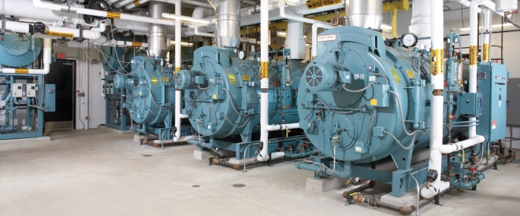

15+
İldən Artıq Təcrübə
2008-ci ildən etibarən servis sektorunda uğurlu fəaliyyətimiz, qazanxana və sənaye avadanlıqlarının təmirində zəngin mühəndislik təcrübəmiz.
Binalar, istehsalat müəssisələri, fabriklər, aqrokomplekslər və asfalt zavodları üçün istənilən gücdə və mürəkkəblikdə olan qazanxanaların, sənaye/qeyri-sənaye odluqlarının (burner), CO2 avtomatika sistemlərinin, dövriyyə və təzyiq nasoslarının, generatorların və vintli hava kompressorlarının profesional texniki servisi, təmiri və retrofit olunması xidmətlərini təqdim edirik. Məqsədimiz — avadanlıqlarınızın fasiləsiz işini, maksimal enerji səmərəliliyini və tam təhlükəsizliyini təmin etməkdir.

2008-ci ildən etibarən servis sektorunda uğurlu fəaliyyətimiz, qazanxana və sənaye avadanlıqlarının təmirində zəngin mühəndislik təcrübəmiz.
Bütün təmir, modifikasiya və ehtiyat hissəsi dəyişimi işlərinə zəmanət öhdəliyi.
İstehsalatın və ya obyektin dayanmaması üçün operativ mobil servis xidməti.
Odluqların dəqiq kalibrlənməsi və elektron modulyasiyaya keçirilməsi (retrofit) nəticəsində əldə olunan maksimum səmərəlilik.
Kiçik həcmli mərkəzi isitmə sistemlərindən tutmuş, nəhəng sənaye buxar qazanlarına və asfalt plantı odluqlarına qədər tam texniki xidmət.
Əsas xidmətlərimiz
Altı əsas istiqamətdə diaqnostika, əsaslı təmir, modernizasiya və planlı texniki xidmət — bir mühəndis komandası ilə.
Binaların, sənaye müəssisələrinin və aqrokomplekslərin fasiləsiz istilik və buxar təchizatı tam olaraq qazanxana sistemlərinin etibarlılığından asılıdır. Biz istənilən gücdə və tipli (suqızdırıcı, buxar, qızgın yağ) qazanxanaların kompleks texniki xidmətini, diaqnostikasını və əsaslı təmirini icra edirik.
Xidmətlərimizə qazanların daxili və xarici səthlərinin ərp və çöküntülərdən kimyəvi/mexaniki təmizlənməsi, təhlükəsizlik klapanlarının və avtomatik idarəetmə lövhələrinin tənzimlənməsi və mövsümə tam hazır vəziyyətə gətirilməsi daxildir. Potensial qəzaları öncədən müəyyən edərək, gözlənilməz istehsalat dayanmalarının qarşısını alırıq.
Odluq (burner) qazanxana sisteminin “ürəyi” hesab olunur və onun yanlış çalışması böyük yanacaq itkisinə və yanğın təhlükəsinə yol açır. Biz qaz, dizel, mazut və kombinasiya olunmuş (çoxyanacaqlı) odluqların təmiri, sınağı və kalibrlənməsini peşəkar səviyyədə həyata keçiririk.
Mənəvi və ya fiziki olaraq köhnəlmiş, mexaniki idarəetməli odluqlarınızı modernizasiya edərək (Retrofit), mikroprosessorlu elektron idarəetmə və servo-mühərrikli hava-yanacaq nisbəti sistemlərinə keçiririk. Yanma prosesini rəqəmsal qaz analizatorları vasitəsilə tənzimləməklə, CO və CO2 emissiyalarını minimuma endirir və 15%-dən 30%-dək yanacaq qənaəti əldə edirik.
Müasir istixana və aqrokomplekslərdə bitkilərin fotosintez prosesini sürətləndirmək və məhsuldarlığı maksimuma çatdırmaq üçün CO2 dozajlama sistemlərindən istifadə olunur. Lakin CO2 səviyyəsinin normadan artıq və ya əskik olması həm məhsula zərər verir, həm də heyət üçün təhlükə yaradır.
Biz CO2 generatorlarının və dozajlama xətlərinin avtomatika sistemlərini sıfırdan qurur və ya mövcud sistemləri yeniləyirik. Həssas CO2 sensorlarının kalibrlənməsi, avtomatik qaz sızma təhlükəsizlik klapanlarının inteqrasiyası və mərkəzi idarəetmə pultuna (PLC) qoşulmasını təmin edərək, aqrokompleksinizdə tam nəzarətli və təhlükəsiz mühit yaradırıq.
Mayenin bərabər və təzyiqlə paylanması üçün istifadə olunan dövriyyə, təzyiq artırma (booster), yanğın və drenaj nasoslarının təmiri və profilaktikası mühəndislik dəqiqliyi tələb edir.
Şaquli, üfüqi və mərkəzdənqaçma nasosların diaqnostikası, mexaniki salnik (kipləndirici) və diyircəkli yastıqların (bearing) dəyişdirilməsi, rotorların dinamik balanslaşdırılması, mühərrik sarğılarının nəzarəti və tezlik çeviricilərinin (Inverter/VFD) sazlanması xidmətlərini göstəririk. Bu sayədə nasosların kavitasiya riskini aradan qaldırır və elektrik enerjisi sərfiyyatını ciddi şəkildə azaldırıq.
Sənaye müəssisələrinin pnevmatik avadanlıqlarını sıxılmış hava ilə təmin edən vintli kompressorların dayanması bütün istehsalat xəttinin iflic olması deməkdir.
Biz vintli kompressorların planlı texniki baxışını (yağ, hava və separator filtrlərinin dəyişdirilməsi), vint blokunun (air-end) əsaslı təmirini, klapanların bərpasını, soyutma radiatorlarının təmizlənməsini və təzyiq sensorlarının sazlanmasını icra edirik. Avadanlığın həddindən artıq qızmasının və təzyiq düşmələrinin qarşısını alaraq, onun istismar ömrünü uzadırıq.
Əsas elektrik şəbəkəsində kəsilmə baş verdikdə obyekti fasiləsiz enerji ilə təmin edən dizel və qaz generatorlarının operativ işə düşməsi həyati əhəmiyyət kəsb edir.
Biz generatorların mühərrik və alternatör hissəsinin diaqnostikasını, Avtomatik Transfer Şalterlərinin (ATS) tənzimlənməsini, idarəetmə kartlarının proqramlaşdırılmasını, yük altında sınaqlarını və dövrü yağ/filtr dəyişimini həyata keçiririk. Generatorunuzun hər an qəza rejimində problemsiz işə düşəcəyinə zəmanət veririk.
Xüsusi mühəndislik xidməti
Yanacağın vizual yox, spektral cihazlarla təhlili: hər bir milliqram qaza nəzarət edərək maliyyənizi və ətraf mühiti qoruyuruq.
Qazanxana sistemlərində yanacağın (təbii qaz, dizel, mazut) vizual olaraq — alovun rənginə görə tənzimlənməsi dövrü geridə qalmışdır. Alov gözə mükəmməl görünə bilsə də, kimyəvi tərkibində ciddi yanacaq itkiləri və zəhərli qaz tullantıları ola bilər.
Biz xüsusi kalibrlənmiş rəqəmsal Baca Qazı Analizatorları vasitəsilə odluğun yanma kamerasından çıxan qazların tərkibindəki CO, CO2, NO, NOx və O2 göstəricilərini mikroskopik dəqiqliklə ölçür, alqoritmlərə əsasən hava/yanacaq nisbətini idarəetmə lövhəsindən (servo-mühərriklərdən) dəqiq tənzimləyirik.
Azad oksigenin normadan çox olması lazımsız havanın qızdırılaraq bacadan bayıra atılması (enerji itkisi), az olması isə yanacağın tam yanmaması deməkdir. Odluğun hava damperini mikron dəqiqliyi ilə tənzimləyərək O2 göstəricisini ideal həddə (təbii qaz üçün 3–4% aralığına) gətiririk.
Yanacaq tam yanmadıqda karbon-monoksid (CO) əmələ gəlir. Bu, birbaşa havaya sovurulan yanmamış pul və zəhərlənmə riskidir. CO göstəricisini ppm səviyyəsinə endirməklə yanacağın 100%-ə yaxın effektivliklə enerjiyə çevrilməsini təmin edirik.
Bacada CO2-nin pik səviyyəyə çatması yanacağın ideal yandığını göstərir. Maksimum CO2 verimini almaq üçün hava və yanacaq girişini tam balansa gətiririk.
Yanma kamerasında temperatur həddindən artıq yüksək olduqda zərərli NOx qazları yaranır. Alovun formalı yanmasını və temperaturunu tənzimləyərək Low-NOx (aşağı emissiya) standartlarını təmin edirik.
Yanma dərəcəsi düzgün tənzimlənməmiş sənaye odluqları il ərzində tonlarla artıq yanacaq və ya minlərlə kubmetr artıq təbii qaz yandırır. Analizatorla edilən tənzimləmə bu itkini anında dayandırır.
Tam yanmayan yanacaq qazanın borularında qurum yaradır. 1 mm-lik qurum təbəqəsi istilik ötürülməsini 10% zəiflədir. Analiz sayəsində qazan boruları təmiz qalır.
Zəhərli CO və NOx qazlarının beynəlxalq ekoloji normalara uyğunlaşdırılması və Dövlət Ekologiya müfəttişliklərinin yoxlamalarında rəsmi Baca Analizi Hesabatı (Report) təqdim edilməsi.
Xidmət modelləri
Obyektinizin ehtiyaclarına uyğun olaraq istər təcili birdəfəlik təmir, istərsə də uzunmüddətli dövri texniki xidmət müqaviləsi təklif edirik.
Obyekt tipləri
Yüksək güclü və ağır şəraitdə çalışan asfalt plantı odluqlarının (dizel, mazut, təbii qaz və ya kombinasiya olunmuş) təcili təmiri, yanma kamerasının kalibrlənməsi, alov sensorlarının təmizlənməsi və qaz/hava qarışığının optimal tənzimlənməsi.
İstixanaların CO2 idarəetmə sistemləri, böyük həcmli isitmə qazanxanaları, suvarma və təzyiq nasos stansiyalarının fasiləsiz servisi.
İstehsalat xətlərini təmin edən buxar və qızgın yağ qazanları, yüksək təzyiqli vintli hava kompressorları və sənaye odluqlarının təmiri və retrofiti.
Mərkəzi isitmə və isti su qazanxanaları, təzyiq artırma (booster) nasosları, dövriyyə sistemləri və qəza generatorlarının kompleks baxışı.
Əməkdaşlıq
2008-ci ildən bəri ölkənin aparıcı sənaye müəssisələri, tikinti şirkətləri, otel şəbəkələri və aqrokompleksləri ilə uğurlu əməkdaşlıq edirik.
Sertifikatlar və lisenziyalar
Xidmətlərimiz yüksək mühəndislik standartlarına, təhlükəsizlik normativlərinə və rəsmi dövlət lisenziyalarına tam cavab verir.
Təhlükə potensiallı obyektlərdə (buxar və suqızdırıcı qazanlar, təzyiq altında işləyən qablar) montaj, sazlama və təmir işlərinin, həmçinin texniki qurğuların diaqnostikası və yoxlamalarının aparılması üçün rəsmi lisenziyalar.
Mühəndis heyətimizin aparıcı beynəlxalq odluq, qazan, vintli kompressor və generator istehsalçılarının xüsusi təlim mərkəzlərində keçdiyi ixtisaslaşma akkreditasiyaları.
Dəstəklədiyimiz brendlər
Odluq, qazan, kompressor, nasos və generator istehsalçılarının geniş çeşidi üzrə orijinal ehtiyat hissə, istehsalçı protokolları və sertifikatlı mühəndis heyəti ilə xidmət göstəririk.
FAQ
Mexaniki idarə olunan köhnə odluqlarda hava və yanacaq nisbəti dəqiq tənzimlənmir. Retrofit zamanı rəqəmsal idarəetmə və servo-mühərriklər quraşdırılır. Bu, yanacağın tam yanmasını təmin edərək 15–30% yanacaq qənaəti verir.
Sənaye obyektlərində və böyük qazanxanalarda baca qazı analizi ildə ən azı 4 dəfə (mövsüm keçidlərində) aparılmalıdır. Həmçinin yanacaq keyfiyyəti dəyişdikdə və ya təmir işindən sonra mütləqdir.
Dövri xidmət zamanı mühəndislərimiz kiçik nasazlıqları öncədən aşkar edir. Bu, istehsalatın anidən dayanmasının və sonradan yaranacaq çox daha bahalı təmir xərclərinin qarşısını alır.
Mühəndisimizin obyektinizə baxış keçirməsi, mövcud avadanlıqların auditi və sizə xüsusi texniki/kommersiya təklifinin hazırlanması üçün bizimlə əlaqə saxlayın.